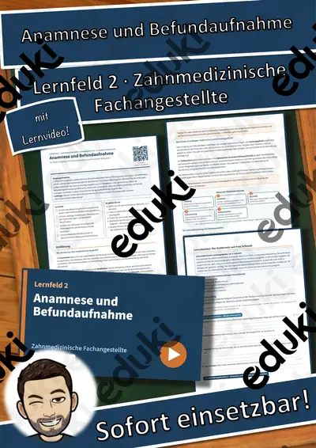

LF 9 Medizinische Fachangestellte: Diabetesbetreuung: Blutzuckermessung und Insulin – Übungen, Lösungen + Lernvideo
Diabetesbetreuung: Blutzuckermessung und Insulin – Lernpaket Einführung + Übung für Medizinische Fachangestellte, 3. Ausbildungsjahr, Lernfeld 9 (Anbindung: Verdauung, Kohlenhydrate und Ernährung)Für den Berufsschulunterricht im Ausbildungsberuf Medizinischer Fachangestellte/-r, Lernfeld 9 „Patienten bei diagnostischen und therapeutischen Maßnahmen der Erkrankungen des Verdauungssystems begleiten“ (3. Ausbildungsjahr).
Das steckt drin (10 Seiten):
- Einstieg mit realistischer Ausgangssituation und Leitfrage
- Einführung als Sachtext auf Berufsschulniveau mit Merkekästen
- Schaubild und Fachbegriffe-Tabelle
- handlungsorientierte Lernsituation mit Materialien
- 12 Aufgaben nach Anforderungsbereichen (I: 4, II: 5, III: 3) mit Punkten und Sozialform
- Selbstcheck, Prüfungstipp und Notenorientierung
- ausführliche Lösungen auf eigenen Seiten
- QR-Code zum passenden Lernvideo (ca. 3–6 Minuten, mit Untertiteln)Lernziele:
- Ich kann den Ablauf einer Blutzuckermessung in der Praxis beschreiben und hygienisch korrekt durchführen.
- Ich kann Insulinarten nach Wirkungsbeginn und Wirkdauer unterscheiden und Applikationsformen nennen.
- Ich kann Anzeichen einer Unterzuckerung erkennen und die Erstmaßnahmen begründen.
- Ich kann ein Blutzuckerprotokoll auswerten und auffällige Werte zur ärztlichen Rückmeldung markieren.
- Ich kann Patientinnen und Patienten in die Selbstkontrolle einweisen und die Injektionstechnik am Modell erklären.
Alle Betriebe, Personen und Fälle sind frei erfunden, alle Grafiken eigene Darstellungen. Sofort einsetzbar im Unterricht, für Vertretungsstunden, zur Prüfungsvorbereitung und zum selbstständigen Lernen.
FachGesundheit, Erziehung & Soziales (BS)
Klasse–
SchulformBerufsschule
MaterialartArbeitsblätter, Prüfungsvorbereitung
Ähnliche Materialien

LF 2 Zahnmedizinische Fachangestellte: Anamnese und Befundaufnahme – Übungen, Lösungen + Lernvideo

LF 12 Zahnmedizinische Fachangestellte: Röntgen: Strahlenschutz und Aufnahmetechnik – Übungen, Lösungen + Lernvideo

LF 3 Zahnmedizinische Fachangestellte: Infektionsschutz und Abfallmanagement in der Zahnarztpraxis – Übungen, Lösungen +

LF 12 Medizinische Fachangestellte: Arbeitszeugnis lesen und verstehen – Übungen, Lösungen + Lernvideo

LF 7 Zahnmedizinische Fachangestellte: Notfallmanagement in der Zahnarztpraxis – Übungen, Lösungen + Lernvideo

LF 9 Medizinische Fachangestellte: Endoskopievorbereitung und Darmvorbereitung – Übungen, Lösungen + Lernvideo

LF 11 Zahnmedizinische Fachangestellte: Heil- und Kostenplan sowie Festzuschüsse – Übungen, Lösungen + Lernvideo